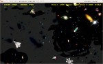
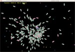
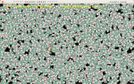
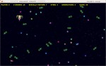

Hi everyone. Gosu is awesome!
~~~~~~~~~~~~~~~~~~~~~~~~~~~~~~~~~~~~~~~
HOW TO PLAY GALAXY CRAFT:
Requires RubyGems with Gosu Gem. You could probably make it
work with C++, but I don't know how to do that.
To check out GalaxyCraft, simply clone:
https://github.com/MattLemmon/ginto whatever folder, then go into the 'g' folder and type:
$ ruby g5.rb
~~~~~~~~~~~~~~~~~~~~~~~~~~~~~~~~~~~~~~~
ABOUT THE GAME:
A more detailed description of the game is included in the README.
(
https://github.com/MattLemmon/g/README.txt)

This game is a derivative work of the gosu tutorial spaceship game.

I am fairly new to programming and I am wondering if anyone can
point me in the right direction (perhaps a link?) to show me how
to create a welcome screen...
Or, even better, if you want feel free to create a welcome screen
yourself, and add it to the git with a pull request, or by sending
it to me, or however seems best.
Gosu is total awesomeness.

Also, on a side note, how many people have their games on github?
Are there other suggested games that I can check out to see how
the code works? I have successfully installed CtnRbyWithWallJump.
I will continue to search through this forum for other similar games.

Also, if anyone wants help creating artwork for their games, I am a
pretty good artist, and I am eager to participate. Just let me know.
~~~~~~~~~~~~~~~~~~~~~~~~~~~~~~~~~~~~~~~
HOW TO BEAT GALAXY CRAFT:
You win if you can help create a welcome screen.
~~~~~~~~~~~~~~~~~~~~~~~~~~~~~~~~~~~~~~~
WINNERS' CIRCLE:
Mike
Jon
~~~~~~~~~~~~~~~~~~~~~~~~~~~~~~~~~~~~~~~